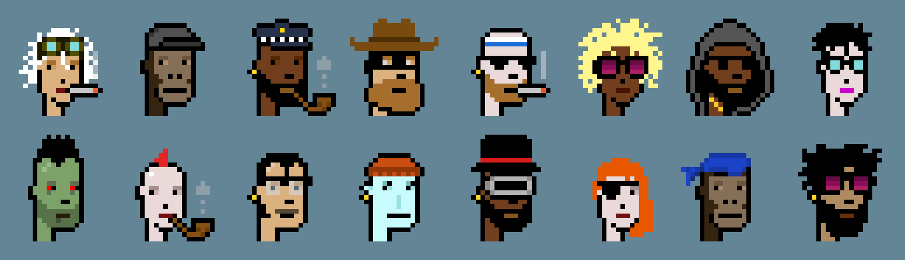

Bored Ape Yacht Club
postado 02 abril 2022
Os NFTs da Bored Ape Yacht Club, icônica coleção de macacos que conquistou celebridades e elevou o “status” do setor, possuem um novo preço mínimo bastante salgado. Para ser o dono de um dos 10 mil NFTs exclusivos, é preciso desembolsar pelo menos 158,88 ETH, o equivalente a US$ 435.441, na cotação atual.
Este é o valor mínimo em dólares mais alto da história da coleção, que iniciou suas vendas a 0,08 ETH, aproximadamente US$ 272. Quando convertido para reais, o novo valor mínimo ultrapassa a casa dos sete dígitos, chegando a R$2,1 milhão.
Gerados de forma automática e aleatória por meio de um algoritmo programado, cada macaco da coleção possui características únicas e pode ser mais ou menos raro, chegando a custar bem mais que R$2,1 milhão. O “Bored Ape” mais caro foi arrematado na casa de leilão Sotheby’s em fevereiro por R$16 milhões.
O acesso a benefícios da comunidade são os maiores atrativos da Bored Ape Yacht Club e suas outras coleções, como a Mutant Ape Yacht Club, que apresenta macacos que sofreram “mutações” causadas por um soro radioativo, proporcionando características ainda mais raras ao NFT. Os donos de tokens não fungíveis do ecossistema criado pela Yuga Labs entram para um verdadeiro clube de benefícios, onde participam de eventos e ganham recompensas exclusivas. Tal fator é considerado por muitos como um dos principais atrativos que tornaram a Bored Ape Yacht Club a coleção de NFTs mais cara da história, com valorização surpreendente.
Veja abaixo algumas celebridades que fazem parte desse grupo seleto e desejado.
— Serena Williams (@serenawilliams) January 20, 2022
I am an ape! #community #art #BoredApeYC pic.twitter.com/iOe3E0H2t6
— Neymar Jr (@neymarjr) January 20, 2022
Acompanhe toda coleçao aqui.
CryptoPunks
postado 03 abril 2022 
Os CryptoPunks são possivelmente os NFTs mais valiosos do mundo.
A série conta com 10 mil desenhos de bonecos em baixa resolução, com aparência semelhante aos encontrados em jogos antigos.
Quando a coleção foi lançada, em 2017, o preço de cada token era de cerca de R$90 e houve uma distribuição gratuita de alguns desses NFTs.
No último final de semana houve uma venda recorde: um CryptoPunk vendido por R$123 milhões. Os CryptoPunks são possivelmente os NFTs mais valiosos do mundo. Apesar de terem sido superados pelos Bored Apes em preço mínimo, ainda são os "punks" os tokens mais caros individualmente.
As cores e os acessórios são combinados de forma aleatória através de algoritmos de randomização. Apesar da simplicidade dos traços, a coleção se tornou muito valiosa por ser apontada como a pioneira desse modelo, o "punk" #5822 é um dos únicos aliens entre os NFTs da coleção.
Apesar de ser o CryptoPunk mais caro de todos os tempos, superando o "punk" #7523, vendido no ano passado por quase R$63 milhões em leilão realizado na Sotheby's, o token recordista é apenas o oitavo mais raro da coleção, o que indica que o recorde poderá ser quebrado novamente em breve — isso, claro, se os donos dos sete NFTs mais raros que existem decidirem se desfazer de seus punks.
A seguir um vídeo abaixo esclarecendo tudo sobre os NFTs mais valiosos do planeta.
Acompanhe toda coleção aqui.